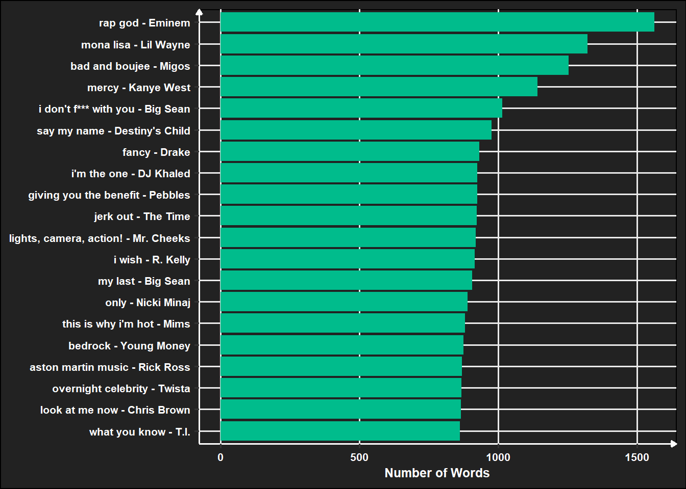

library(tidyverse)
library(tidytext)
library(ggwordcloud)
source('../functions.R')Text Mining
words_df <- read_csv('../data/lyr_df.csv') |>
mutate(song_art = glue::glue('{song} - {artist}')) |>
unnest_tokens(word, lyrics)
words_df# A tibble: 433,941 × 6
song artist hip_h…¹ genre song_…² word
<chr> <chr> <dbl> <chr> <glue> <chr>
1 (if you're not in it for love) i'm outta … Shani… 0 Coun… (if yo… three
2 (if you're not in it for love) i'm outta … Shani… 0 Coun… (if yo… four
3 (if you're not in it for love) i'm outta … Shani… 0 Coun… (if yo… five
4 (if you're not in it for love) i'm outta … Shani… 0 Coun… (if yo… mind
5 (if you're not in it for love) i'm outta … Shani… 0 Coun… (if yo… if
6 (if you're not in it for love) i'm outta … Shani… 0 Coun… (if yo… i
7 (if you're not in it for love) i'm outta … Shani… 0 Coun… (if yo… sit
8 (if you're not in it for love) i'm outta … Shani… 0 Coun… (if yo… down
9 (if you're not in it for love) i'm outta … Shani… 0 Coun… (if yo… can
10 (if you're not in it for love) i'm outta … Shani… 0 Coun… (if yo… i
# … with 433,931 more rows, and abbreviated variable names ¹hip_hop_rnb,
# ²song_art
# ℹ Use `print(n = ...)` to see more rowssongs_by_words <- words_df |>
group_by(song_art, genre) |>
summarise(num_of_words = n()) |>
ungroup() |>
arrange(desc(num_of_words))
songs_by_words |>
# head(20) |>
# mutate(
# song_art = fct_reorder(song_art,tot_wrds)
# ) |>
ggplot(aes(num_of_words, fill = genre)) +
geom_histogram() +
xlab('Number of Words') +
ylab('Number of Songs') +
theme_ben() +
scale_fill_manual(values = clrs)songs_by_words |>
head(20) |>
mutate(
song_art = fct_reorder(song_art,num_of_words)
) |>
ggplot(aes(y = song_art,
x = num_of_words,
fill = genre)
) +
geom_col() +
scale_fill_manual(values = clrs) +
labs(x = 'Number of Words',
y = NULL)+
theme_ben() +
theme(legend.position = 'none')
data("stop_words")
words_trimmed_df <- words_df |>
anti_join(stop_words)
words_trimmed_df# A tibble: 137,153 × 6
song artist hip_h…¹ genre song_…² word
<chr> <chr> <dbl> <chr> <glue> <chr>
1 (if you're not in it for love) i'm outta … Shani… 0 Coun… (if yo… mind
2 (if you're not in it for love) i'm outta … Shani… 0 Coun… (if yo… sit
3 (if you're not in it for love) i'm outta … Shani… 0 Coun… (if yo… buy
4 (if you're not in it for love) i'm outta … Shani… 0 Coun… (if yo… round
5 (if you're not in it for love) i'm outta … Shani… 0 Coun… (if yo… town
6 (if you're not in it for love) i'm outta … Shani… 0 Coun… (if yo… line
7 (if you're not in it for love) i'm outta … Shani… 0 Coun… (if yo… time
8 (if you're not in it for love) i'm outta … Shani… 0 Coun… (if yo… home
9 (if you're not in it for love) i'm outta … Shani… 0 Coun… (if yo… woman
10 (if you're not in it for love) i'm outta … Shani… 0 Coun… (if yo… pret…
# … with 137,143 more rows, and abbreviated variable names ¹hip_hop_rnb,
# ²song_art
# ℹ Use `print(n = ...)` to see more rowssongs_by_words_trimmed <- words_trimmed_df |>
group_by(song_art, genre) |>
summarise(num_of_words = n()) |>
ungroup() |>
arrange(desc(num_of_words))
songs_by_words_trimmed |>
# head(20) |>
# mutate(
# song_art = fct_reorder(song_art,tot_wrds)
# ) |>
ggplot(aes(num_of_words, fill = genre)) +
geom_histogram() +
xlab('Number of Unique Words') +
ylab('Number of Songs') +
theme_ben() +
scale_fill_manual(values = clrs)songs_by_words_trimmed |>
head(20) |>
mutate(
song_art = fct_reorder(song_art,num_of_words)
) |>
ggplot(aes(y = song_art,
x = num_of_words,
fill = genre)
) +
geom_col() +
scale_fill_manual(values = clrs) +
xlab('Number of Unique Words') +
theme_ben() +
theme( axis.title.y = element_blank(),
legend.position = 'none')top_words_by_song <- words_trimmed_df |>
group_by(genre, song_art) |>
count(word) |> slice_max(n, n = 1)
top_words_by_song# A tibble: 1,893 × 4
# Groups: genre, song_art [1,236]
genre song_art word n
<chr> <glue> <chr> <int>
1 Country / Rock (if you're not in it for love) i'm outta here! - … love 9
2 Country / Rock (this ain't) no thinkin' thing - Trace Adkins thin… 14
3 Country / Rock 1000hp - Godsmack time 5
4 Country / Rock 16 - Highly Suspect ya 20
5 Country / Rock 19 somethin' - Mark Wills 1980 4
6 Country / Rock 19 somethin' - Mark Wills days 4
7 Country / Rock 19 somethin' - Mark Wills world 4
8 Country / Rock a better man - Clint Black leav… 7
9 Country / Rock a broken wing - Martina McBride brok… 6
10 Country / Rock a broken wing - Martina McBride wing 6
# … with 1,883 more rows
# ℹ Use `print(n = ...)` to see more rowstop_words_by_song |>
arrange(desc(n)) |>
head(100) |>
ggplot(aes(label = word, size = n, color = genre)) +
geom_text_wordcloud(shape = 'square') +
scale_color_manual(values = c("#ffffff","#00bc8c")) +
scale_size_area(max_size = 10) +
theme(legend.position = 'Top')# plot_by_year <- function(year){
# words_by_year_df |>
# group_by(rel_year) |>
# slice_max(n, n = 100) |>
# filter(rel_year == year) |>
# ggplot(aes(label = word, size = n)) +
# geom_text_wordcloud(color = "#145389") +
# scale_size_area(max_size = 14) +
# facet_wrap(~rel_year,scales = "free" ) +
# theme_ben()
#
# }
#
# plot_by_year
#
#
# years <- words_by_year_df$rel_year |> unique()
#
# lapply(years, plot_by_year)top_words_by_genre <- words_trimmed_df |>
drop_na(hip_hop_rnb) |>
group_by(hip_hop_rnb) |>
count(word) |> slice_max(n, n = 100)
top_words_by_genre |>
ggplot(aes(label = word, size = n)) +
geom_text_wordcloud(color = "#145389") +
scale_size_area(max_size = 14) +
facet_wrap(~hip_hop_rnb,scales = "free" ) +
theme_ben()